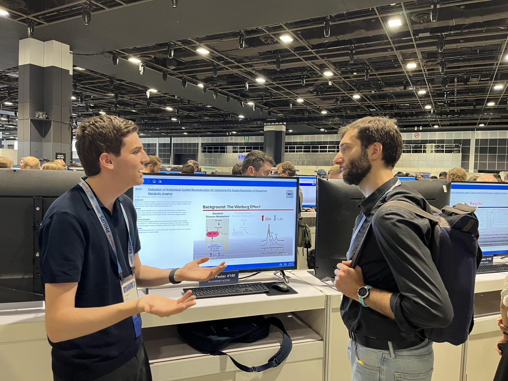

ISMRM Presentation
Navigating expert-to-expert communication at a major scientific conference.
Throughout the summer after my freshman year I worked on a project in the department of Radiology implementing an anatomically guided image reconstruction algorithm. This was my first foray into the world of research and first time seeing a project from the very beginning to the end when I got to share it with the rest of the field. Throughout the way I got to experience hurdles and setbacks, share my preliminary results, get feedback, and finally compose my results into a digital poster and present them in person at the annual International Society for Magnetic Resonance in Medicine conference in Singapore.
It’s hard to capture everything I learned about the world of science and science communication with a few artifacts because it’s not just the final product. In presenting my work to peers, receiving feedback and advice, I was able to better understand what aspects of my work people were interested in and anticipate their questions.
Because the ISMRM audience consisted of leading MRI physicists and radiologists, I didn’t need to simplify the core mathematics or the physics behind magnetic resonance imaging Instead, the communication challenge was one of clarity and emphasis. In a massive conference hall filled with thousands of digital posters, I had to ensure my findings were immediately digestible to experts who were otherwise inundated with information.

Ultimately, presenting at ISMRM taught me that science communication isn't just a one-way translation from expert to layperson; it is equally vital in expert-to-expert communication. Even the most specialized scientists suffer from cognitive overload, making clear, narrative-driven, and purposeful visualizations essential to cutting through the noise and advancing science as a collaborative effort.